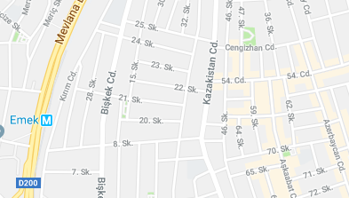

Task: You went to a meeting at TOBB ETU for a job. As your work is very busy, you need to find the nearest hotel and make a reservation. You should use the button below to find the nearest hotel (Find the nearest hotel - direct you to the nearest hotel). You are expected to find this hotel and make a reservation.
